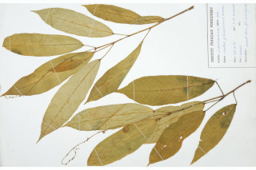
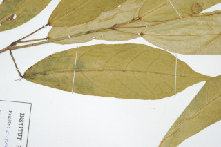
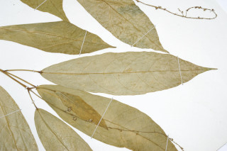
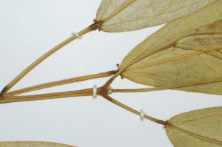

Images :






| Habit : | Large shrubs to small trees up to 4 m tall. |
| Leaves : | Leaves simple , alternate , spiral ; petiole up to 5 cm long; lamina 7.5-17.8 x 3.2-6.4 cm, elliptic-oblong , apex acuminate to caudate - acuminate , base rounded with 2-stipitate glands at the junction of petiole , margin minutely serrate , glabrous or with a few stellate hairs ; midrib raised above; secondary_nerves 6-8 pairs; tertiary_nerves broadly percurrent . |
| Inflorescence / Flower : | Flowers unisexual , monoecious ; male flowers often fascicled on 12-25 cm long slender racemes ; female flowers usually solitary and near the base of the raceme . |
| Fruit and Seed : | Capsules 3-valved , globose , densely stellate hairy ; 3-seeded . |